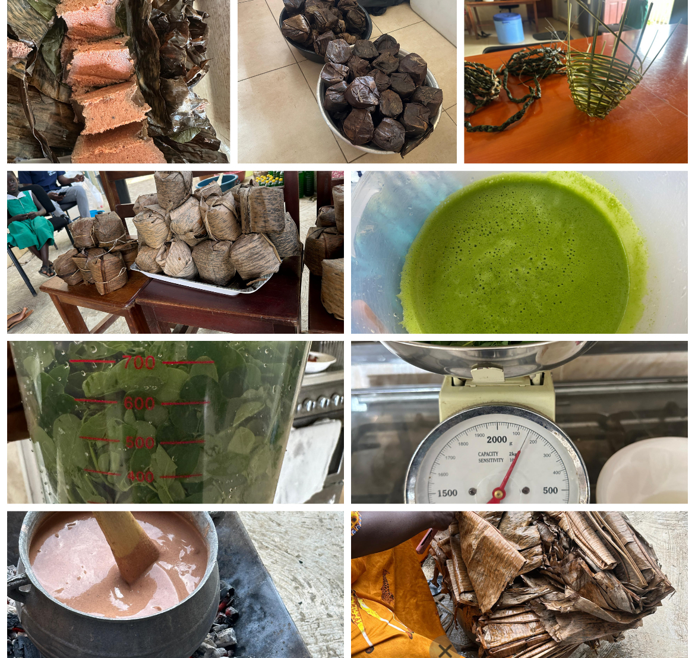

PROJECTS
Chosen Sister Fund
Since its inception in October 2021, the Chosen Sister Fund has made a significant impact on the lives of 26 women across the Greater Accra, Central Region, and Volta Region of Ghana. The premise is simple yet profound: provide interest-free loans to women in need, encourage them to invest in their businesses and livelihoods, and instill a sense of responsibility to give back to the fund for the benefit of others. The Chosen Sister Fund exemplifies our commitment to creating sustainable change and empowering women in Ghana. We are excited to see the continued impact of this project as we work towards a brighter future for all. Through this project, Duala Foundation continues to make a lasting impact on the lives of women in Ghana, one chosen sister at a time.


Eduma School
The Foundation embarked on a mission to provide a safe and conducive learning environment for the children of Eduma, a small town near Yamoransa in the Central Region of Ghana. The project was born out of necessity, as the children of Eduma faced challenges accessing education after a fatal snakebite incident occurred during their daily trek to school in Yamoransa. With no school of their own and temporary arrangements in uncompleted buildings, the need for a proper educational facility became paramount. Looking beyond the immediate construction, the project envisions future programs such as evening vocational classes for women in the area, highlighting a holistic approach to community development and empowerment.
High Nutrient Kenkey
High Nutrient Kenkey represents a pioneering venture in Yamoransa, introducing three distinct types of kenkey enriched with nutritional powerhouses: moringa, soybean, and sorghum. This innovative approach transcends mere flavours, focusing on nourishment and wellness while honouring the culinary traditions deeply rooted in Ghanaian culture. Each variant of High Nutrient Kenkey is a testament to the diversity of ingredients and flavours found in nature, carefully curated to provide a holistic approach to nutrition. By incorporating these nutrient-dense foods into the traditional kenkey recipe, this project aims to promote health, wellness, and culinary innovation within the community. As this project unfolds in Yamoransa, it symbolises a journey toward a healthier and more vibrant community.
